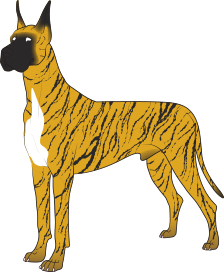
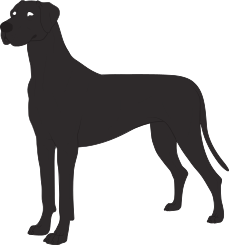
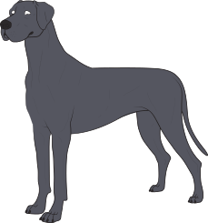
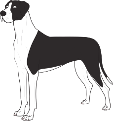

Окрашенная история немецкого дога
Эми Фернандес
"Canine Chronicle" 2015 год. Страницы: 162-174.

Не так много пород, которые могут служить примером гештальта чистокровных собак, как, например, дог. В равной степени величественная и очаровательная, эта удивительная порода может быть результатом только богатой, разнообразной истории. Ее размеры, величественный вид, доброжелательное выражение лица и ласковый нрав подтверждают это. Но ничто не отражает наследие породы лучше, чем ее "конфетная коробка" окрасов и маркировок.
Стандарт Great Dane отличается диапазоном допустимых окрасов и точным, описательным разъяснением каждого из них. Версии стандартов AKC, FCI и Ангглийского породного клуба несколько отличаются друг от друга, но все они признают шесть различных окрасов, культивируемых в породе - тигровый, палевый, голубой, черный, арлекин (мраморный) и плащевой.
Рог изобилия цветных генов у догов появился задолго до того, как они стали чистокровной породой. Комбинация мастиф/грейхаунд представляет собой один из старейших и наиболее продолжительных проектов селекционного разведения в истории Canis familiaris. [GD - статья написана человеком, не специалистом в истории и происхождении породы. Упоминание мастифов и грейхаундов в качестве предков дога не является корректным]. Это сочетание силы, скорости, размера, выносливости и смелости стало основой для бесчисленных разновидностей собак, описанных в классические времена. Это было верно и для многих ранних чистокровных прототипов. Однако большинство из них исчезли, поскольку Европа разделилась на части после падения Рима.
Предшественники догов были исключением. Их основные формы, называемые собирательно "алаунт", были описаны в средние века в охотничьих трактатах, таких как Livre de Chasse. Перефразируя этот основополагающий источник средневекового развития чистокровной породы в 1905 году, Уотсон подтверждает, что к 1400 году тип дога был уже устоявшейся, но далеко не единственной популярной вариацией на эту тему. Гастон Фебус описывает три основных типа - один, "напоминающий крепкоголовую борзую, короткомордую мясницкую собаку, предка наших приманивающих пород, и мощного охотничьего мастифа, похожего на большого дога".
Универсальность и практичность обеспечили его постоянство и популярность, но, как и в большинстве случаев истории рабочих собак, развитие догов не заслуживало особого внимания историков до тех пор, пока в восемнадцатом веке по Европе не прокатилась научная революция. Амбициозные натуралисты начали каталогизировать каждую вещь, включая множество региональных пород мастифов/грейхаундов. На тот момент Германия, конечно, не обладала монополией на эту породу, но она, несомненно, была потрясающим источником потомков догов. Несомненно, бесчисленное их количество появлялось и исчезало без всякого признания. Тем не менее, они оставили свой след в этом большом эклектичном генофонде.
Это не означает, что эти вариации не развились в узнаваемые региональные типы. Некоторые из них часто упоминались, например, Гросс Булленбейсессер, также называемый Барен-бейсер, или Дойче Догге.
Не менее популярные мастифы первого и второго поколения были известны как Englische Dogge. Другим типом, преобладающим в южной Германии, был Ульмер Дог, отличающийся массивными размерами и черно-белым окрасом.
В северных и центральных землях Германии был распространен датский дог; он был немного меньше и бойчее, его типичные окрасы включали палевый, изабелловый и голубой. Другая разновидность, грубая, угрюмая, не имеющая ничего общего с другими породами, известная как Saupacker/Saurude или Hatzriidem, как правило, была тигровой.

Некоторые из этих разновидностей были лучше с эстетической точки зрения, но главным для всех них была функциональность, а не внешний вид. Политика дала первый большой толчок к изменению в расстановке типов.

Отто фон Бисмарк (1815-1898), железный канцлер Германии, в 1862 году вышел на авансцену. Его крылатая фраза "кровь и железо" отражала его решимость создать промышленный и военный гигант из федерации земель и княжеств Германии.

К тому времени, когда в 1870 году возникла объединенная Германская империя Бисмарка, его свора догов стала сенсацией в СМИ, часто благодаря их возмутительным выходкам, которые мгновенно меняли тон многих ледяных дипломатических встреч. Это постоянное внимание общественности подняло популярность догов до новых высот, особенно голубых, цвета любимой собаки Бисмарка, Тираса. Национальная привязанность Германии к догам связана с Бисмарком, но его влияние, возможно, выходило далеко за рамки этого поверхностного воздействия. Голубые доги потеряли популярность после ухода Бисмарка со сцены, но общая популярность догов не уменьшилась. Германия не была инициатором импульса, но, будучи "перекрестком Европы", она неизбежно стала центром зарождающегося движения чистокровных пород. Национальная гордость гарантировала, что традиционные местные породы были хорошо представлены на первых немецких выставках, и доги с самого начала возглавили этот немецкий кулак. Дебют дога в качестве выставочной собаки состоялся на выставке в Гамбурге в июле 1863 года. На выставке из 15 собак в равной степени были представлены датские и ульмерские собаки. Подобная разрядка была характерна для выставок догов в течение следующего десятилетия, так как клубы экспериментировали с классификациями, основанными на весе, окрасе и региональном типе.
Некоторые исторические источники называют выставку l876 года в Гамбурге первым случаем, когда судья взял на себя инициативу объединить разновидности в один класс. Это решение имело логическое обоснование, но такой подход становился все более неработоспособным, так как количество пород, участвующих в соревнованиях, регулярно превышало сотню. Очевидно, что в дело вступила региональная политика, но это еще не все. Возможно, на родине эти породы культивировались отдельно, но остальной мир старательно смешивал их во все более странную смесь.
Популярность догов послужила катализатором для Германии, которая стала занимать ведущее место в мире чистокровных пород. Начало этому положила печально известная встреча в Берлине в 1878 году, призванная разрешить спиралевидный хаос популярности догов.

Д-р Бодинус, директор Берлинского зоопарка, возглавил конференцию. Среди видных участников был Эдуард Кольмар Месстер (1840-1913), немецкий предприниматель, владевший крупнейшим и самым влиятельным питомником догов в ту эпоху. Масштабная программа разведения Месстера определенно квалифицировалась как промышленное производство.

Она дала таких исторически значимых датчан, как Нерон I, Эльза I, Нерон II, Нерон V, Ментор, Ментор II, Султан I, Султан VI, Минка, Кора и знаменитая Флора.
Возможно, самым противоречивым членом комитета был Макс Хартенштайн, воинствующий немецкий националист и владелец знаменитого питомника Plavia в Саксонии. Хартенштайн был относительным новичком в породе, приобретя своего первого дога в 1874 году, технически вюртембергского хартуда.

Более известный протеже Хартенштайна Йозеф Берта в конечном итоге унаследовал его питомник догов и продолжил крестовый поход своего наставника за немецкие породы. Все семь участников пришли к столу с неоспоримым авторитетом. Но с международной точки зрения существовала одна проблема - они были исключительно немецкими.
Их основной задачей была стандартизация привычных отличительных признаков породы: размера, типа головы, контура, пропорций и т.д., которые к тому времени были довольно неопределенными. Этим они занялись несколько лет спустя. На той встрече они приняли несколько решений, которые вызвали бурю международной вражды. Наряду с самопровозглашением права собственности на породу, они объявили, что в будущем она будет называться Немецким догом.
К тому времени доги стали не просто национальным продуктом, а явлением мирового масштаба. В частности, Англия имела значительную долю в этой игре. Возможно, они не могли сравниться с Германией по численности, но у них была история, хотя ее часто трудно распутать с историей мастифа.
В 1912 году доктор Моррелл Маккензи в книге "Great Danes Past and Present" утверждал, что название Great Dane можно проследить до 1775 года в Великобритании. "Не может быть никаких сомнений в том, что Дог (Great Dane) существует в Англии и Ирландии последние 150 лет, что он был известен под этим именем, и что это не новая порода, как многие хотели бы заставить нас поверить, выведенная в Англии после франко-германской войны". Ринги на британских выставках были впервые предложены для догов в Александровском дворце в январе 1879 года, Бирмингем впервые предложил ринги для догов в 1883 году, а к 1885 году на монопородную выставку было заявлено 60 участников.

Первый английский клуб догов был основан в 1882 году, а второй клуб появился в 1886 году. Кеннел-клуб включил породу в племенную книгу в 1883 году. По иронии судьбы, Султан II, импорт из гигантского питомника Meester, стал первым британским чемпионом в 1884 году. Что особенно важно, в эти годы было создано несколько влиятельных британских кровных линий, начиная с питомника Redgraves Вайолет Хорсфолл. Несмотря на это, Англия не собиралась ни перед кем отчитываться, когда дело касалось чистопородной юрисдикции. Несмотря на яростные возражения немцев. Great Dane стало официальным названием породы в английской племенной книге в 1894 году. Замечательные успехи, достигнуты догами за те несколько о лет... За большим количеством собак, представленных в Дамской ассоциации питомников, последовало 116 на выыставке в Ричмонде. ... доги в Королевстве быстро движутся вперед, угрожая получить численное превосходство над всеми другими крупными породами". (The Kennel, Sept. 1910).

"Многие скажут, что окрас не имеет значения, но зачем в стандарте так подробно описывать каждый окрас, если он не важен?
Я думаю, что зад, линия верха и тип головы стали лучше во всех окрасах.
Сегодня мы видим на ринге много арлекинов, но все еще есть судьи, которые их недооценивают. В прошлом они приносили меньше всего побед, но заводчики очень много работали над тем, чтобы привить им хороший тип и окрас и сделать их конкурентоспособными. С другой стороны, я заметила у арлекинов грубые головы, и эта тенденция мне не нравится.
Палевый окрас - самый распространенный, и он всегда приносил много побед. Но я начинаю замечать много собак, которые ставят сжимают колени и расставляют локти. Экспоненты могут скрыть это для стоячей собаки, но это становится очевидно, когда она двигается. Заводчики палевых должны уделять больше внимания передней части. Я также вижу много палевых и тигровых с красивыми головами, но без достойного тела. Эти собаки с большими, длинными, великолепными головами являются карикатурой на тип дога. Собака такая же широкая, как и ее голова!
Также на выставках представлено довольно много непрокрашенных тигровых. Либо рисунок на шкуре размыт, либо они имеют полосы то тут, то там. У некоторых отсутствует шеврон на спине, который является отличительным признаком тигровых. Многие судьи игнорируют это, потому что это легкий путь.
Голубой окрас - самый редкий в ринге, и среди них есть очень красивые.
Типа головы исторически не было определено, и структурно им пришлось многое преодолеть. Заводчики голубых очень много работали, и они проделали отличную работу. Они концентрировались на всем - движениях, типе головы - и это хорошо видно. Ch. Sharcoon Tomahawk оказал большое влияние на голубых.
С голубым окрасом немного сложнее победить, но есть хорошие собаки. Этот окрас был принят с 1999 года. Если это разрешенный цвет, вы должны уметь оценивать его. Люди должны вступить в 21 век.
У всех есть цветовые предпочтения, и это всегда будет влиять на судейство в той или иной степени. Но в целом, судьи стали более лояльно относиться к окрасам.
Черные очень конкурентоспособны. Особенно Тути Лонго проделала большую работу с черными. Ее собаки оказали большое влияние, особенно Ch. Longo's Primo D'Aquino.
В арлекинах у нас было три очень влиятельных, перспективных кобеля:
Ч. Amhurst Harlwood Bubba Rondo
Ч. BMW Architect of Jericho
Ч. Vi Daynes Johnny Angel
Они наложили печать узнаваемого типа на свое потомство. Вам не нужно было сверяться с каталогом, чтобы понять это. BMW и Riverwood, безусловно, вывели арлекинов на новый уровень. Заводчики, от которых произошли эти линии, уже умерли, но их собаки продолжают оказывать влияние на породу."
Жалуясь на то, что в Германии все больше внимания уделяется окрасу догов, редактор журнала "Наши собаки" Тео Марплс (Theo Marples) отразил преобладающие в то время британские настроения, назвав это "нововведением, которым недавно была охвачена большая часть сообщества..." Это немецкое нововведение, так как окрас является основополагающим моментом для породы на ее родине; но тогда собака там находится в большее определенном состоянии, чем в Англии, если говорить в целом. Однако сейчас порода делает стремительные успехи, если эта мода на окрасы не затормозит ее законный прогресс". Вполне возможно, что последнее слово в эволюции [окраса] догов осталось бы за Британией. Но произошло несколько событий, которые изменили картину. Запрет на купирование ушей в Англии, а затем резкие карантинные ограничения оказали огромное негативное влияние на развитие догов в этой стране.

Тем временем, в типично немецкой манере, селекционеры упорно пытались утвердить свою концепцию породы, в частности, эту вездесущую проблему объединения нескольких разновидностей в единый тип. Возможно, с социологической точки зрения их [немецкий] подход к задаче отражал одновременное объединение Германии Бисмарком. Но он, безусловно, противоречил устоявшимся традициям. Установленный протокол клуба Кеймеля заключался в определении идеального типа и безжалостном отборе для всех остальных. Это сработало, потому что немногие любители задумывались о сопутствующем ущербе. Тем не менее, много хорошего [генетически] материала исчезло в результате этого процесса отсева.
Хотя эти разновидности имели общее генетическое наследие, селекционеры довели до совершенства отличительные, узнаваемые типы в рамках стандарта. К тому времени они были важнее, чем потенциальные чистокровные разновидности. Последние символизировали региональную гордость. С самого начала в Германии были предприняты решительные усилия по сохранению этого генетического наследия. В официальном стандарте Deutsche Dogge, опубликованном в 1880 году, доги подразделялись на пестрых, однотонных и пятнистых с пятнами черного или серого цвета.
В своей тщательно проработанной книге "Эволюция догов. Путешественник во времени" Джули Эванс проследила эти постоянные усилия по определению и распутыванию многочисленных генов окраса породы, что сравнимо с задачей разборки гречки, проса и горошка. Несколько существенных факторов способствовали окончательному успеху этой гигантской работы. Очевидно, что это было возможно только в контексте документированного разведения, которое было столь же затяжной нелегкой битвой.

"Приближается 50-й год моей работы с догами, и я наблюдаю некоторые интересные изменения в эволюции различных окрасов и их качества. Сегодня для выставок утверждены шесть окрасов: черный, голубой, тигровый, палевый, арлекин и плащевой. [GD - C 1 января 2019 года, несмотря на возражения части заводчиков, владельцев и экспертов, в "стандартные" цвета включили серо-мраморных догов с возможностью получать оценки на выставках]
Палевые
Для широкой публики палевый всегда был "стандартным" окрасом догов. В 60-х, 70-х и, вероятно, в 80-х годах палевые одержали более чем справедливую долю побед. За последние 30 лет или около того игровое поле, безусловно, выровнялось. Иногда встречаются бледные, "вымытые", бисквитные экземпляры с очень светлым цветом шерсти, а также "сажистые" палевые с черными пятнами по бокам морды и головы, а также на лицевой стороне.
Тигровые
Согласно этическому кодексу заводчика, этот окрас разрешен для совместного разведения с палевыми. Поскольку тигровый окрас является доминантным, статистическая вероятность такой вязки, при условии, что тигровый несет ген палевого, составляет 50 процентов от каждого окраса. В большинстве регионов страны можно встретить больше палевых, чем тигровых. Недостаточные или разбавленные отметины и нежелательный основной цвет шерсти - обычное явление. Также редко встречаются чрезмерно маркированные особи, которые производят то, что когда-то называлось ониксовым бриндлом. У боксеров это было известно как обратное веретено. Если не присматриваться внимательно, кажется, что у этой особи черная основная шерсть.
Голубые
На протяжении всего времени, пока я занимаюсь догами, голубой окрас был наименее распространенным. Племенное поголовье не такое многочисленное, как у других окрасов, и общее качество часто не соответствовало уровню других окрасов. Однако сегодня мы видим больше голубых и, что более важно, лучших по качеству экземпляров.
Черные
Популярность и общее качество черных продолжает расти. Есть несколько программ разведения, которые постоянно производят собак высокого качества.
Плащевые
Это самый новый окрас, одобренный для выставок. За последние 15 лет или около того мы видели множество этих прекрасных собак, получивших высшее признание на выставках. Более того, плащевой выиграл Национальную выставку GDCA 2014 года. В течение многих лет многие из этих прекрасных собак производились в окрасе арлекин, но не были допущены к выставкам. Различные уровни нежелательных отметин встречаются довольно часто.
Арлекин
Наверное, ни один окрас в мире Great Dane не приобрел большей популярности и не вырос в качестве, чем арлекин. Нет ничего необычного в том, что на крупной выставке в открытом классе арлекинов можно увидеть лучшее общее качество. Было время, когда существовало лишь несколько программ разведения, которые производили действительно прекрасных арлекинов. Сегодня, кажется, что очень красивые экземпляры встречаются повсюду. Наиболее обсуждаемым аспектом арлекинов (в меньшей степени плащевых) является тип и распределение отметин. Идеал, описанный в стандарте, встречается не так часто, как вариации описанных рисунков.
Ген, даюший мраморный окрас нестабилен, и не перестает удивлять огромное количество конечных результатов. Всегда существовали разногласия по поводу косметических недостатков на хорошо сложенной собаке. У догов есть требования по окрасу, но не по маркировке. Поэтому поговорка "красота - в глазах смотрящего" обычно определяет, выиграет или проиграет хуже маркированный экземпляр. Судья должен принять или отклонить косметическое отклонение в той степени, в какой он/она считает, что оно умаляет общий вид собаки. Важность косметики по сравнению со структурой всегда была темой для дискуссий. Окончательное решение остается за мнением судьи и может отличаться от одного человека к другому."
12 января 1888 года Deutsche Doggen Club стал первым породным специализированным клубом Германии. Уникальное устройство немецкого питомникового мира стало решающим компонентом этих усилий. В то время большинство клубов-питомников вели нелегкую борьбу за последовательную регистрацию.

Любители не привыкли подчиняться приказам, и большинство попыток внедрить и обеспечить соблюдение правил встречали воинственное игнорирование.
Возможно, многие немецкие заводчики предпочли бы игнорировать строгие правила организации по разведению и требования по выбраковке, если бы не контроль со стороны общественности, встроенный в эту систему.

Новые открытия в области генетической наследственности также добавили элемент научной достоверности к дальновидному подходу DDC к разведению догов. С практической точки зрения эта информация просто подтверждала знания, полученные ранее путем наблюдений и опыта. Но она стала важным компонентом для успешного продвижения кодифицированной практики разведения окрасов.
Том I племенного справочника, опубликованного в 1897 году, документировал разведение, начиная с 1883 года.
В нем перечислены: 221 тигровый дог 146 арлекинов 81 палевый 61 голубой и 25 черных.
Окрас постоянно находился в центре внимания, но он никогда не затмевал общий прогресс породы. Как отмечает Эванс в книге "Путешественник во времени", в племенных книгах также фиксировались необычные варианты окраса, такие как фарфор, потому что эти собаки считались соответствующими типу, несмотря на их нетипичный окрас. Жертвовать типом ради окраса означало бы полностью потерять цель.

Постепенно заводчики стали более трепетно относиться к документированию своей работы, что облегчило расчеты наследственных влияний и надежное выявление носителей окраса. Тем не менее, в записях было обнаружено множество случаев генетически невозможных сочетаний. Отчасти это было связано с различиями в ведении личных записей. В основном, это происходило из-за огромного количества недокументированных участников генофонда. И благодаря постоянным военным потрясениям эта проблема казалась бесконечной.
Эти военные потрясения также увеличили приток поголовья догов к американским берегам. Как и везде, порода быстро прижилась в Америке, и влияние Германии здесь преобладало с самого начала. С исторической точки зрения это удивительно. Множество пород прибыло сюда с такими же устоявшимися традициями, и в большинстве случаев эти правила/стандарты были немедленно отброшены. Американцам свойственно сопротивляться авторитетам, но не в этом случае.
Дог также стал редким исключением по причине уважения AKC к авторитету породного-клуба. За исключением того, что Англия приняла решение о названии породы (что может объяснить, почему догу удалось избежать антинемецких настроений, которые оказали влияние на многие породы во время Первой и Второй мировых войн), Германия, а не Англия, с самого начала направляла его американскую эволюцию.
Немецкий импорт был основой американского фундамента породы, начиная с Принца, первого задокументированного импорта, в 1857 году.

Ровно три десятилетия спустя тигровая немецкая сука Юнона, выиграла первый чемпионский титул AKC. В том же году доги стали одной из первых пород, занесенных в племенную книгу AKC.
Предшественник Great Dane Club of America, Клуб немецких мастифов был основан 3 мая 1899 года в Чикаго. Он стал четвертым специализированным клубом AKC, который представлял не кто иной, как Густав Мусс Арнольт.

Будучи судьей, журналистом и директором AKC, Мусс Арнольт был всегда откровенен и имел возможность высказать свое мнение. Мусс Арнольт лучше всего запомнился своим художественным вкладом в тему породистых собак. Будучи любителем догов во втором поколении и имея тесные связи с Германией, он оказал огромное влияние на развитие породы в Америке.
На заре формирования породы американские питомники обычно импортировали, разводили и распространяли собак всех окрасов. Как и в Германии, генофонд породы включал в себя широкий спектр окрасов, таких как, например, голубые тигровые или белый слант. Например, в 1910 году в Вуд-Сайде, Квинс, состоялась первая специализированная выставка догов. Из 80 участников Вестминстерский суперинтендант Джеймс Мортимер выбрал немецкого импорта Гелиоса фон Вюртемберга, собаку палевого окраса без маски.
Изменения в стандарте AKC отражали постоянный прогресс Германии в определении и совершенствовании всех присущих породе окрасов. Стандарт 1892 года допускал широкие вариации на тему основных сплошных, пестрых и пятнистых окрасов. К 1900 году требования были значительно ужесточены, что, безусловно, свидетельствует о прогрессе породы.
Как в Америке, так и в Германии, строгое следование кодексу разведения окрасов началось после Второй мировой войны. Описание окраса в стандарте AKC 1944 года было дословно взято из немецкого стандарта. Однако факты подтверждают, что философия разведения окрасов в Германии укоренилась задолго до этого времени. К 1930-м годам по всей стране были основаны легендарные питомники, такие как Garricrest. Walnut Hall, и Brae Tarn. Большинство из них сузили свою специализацию до одного или двух окрасов - подход, который будет характеризовать разведение догов в будущем.

"В 1999 году AKC признал плащевых в качестве окраса догов. Канада уже признала плащевых, как и FCI и породный клуб. Я немного судила за границей. FCI делит догов на три разновидности: пеалевые и тигровые; черные и белые (к которым относятся черные, мраморные и плащевые - и пиболды, я полагаю); и голубые.
Сегодня наиболее распространенным окрасом, вероятно, является палевый, за ним следуют арлекины, черные, плащевые, тигровые и голубые в порядке убывания распространенности. Когда я начала заниматься догами в 1980 году, тип породы был представлен в основном палевыми и тигровыми.
Арлекины были очень грубыми, особенно по типу головы. Черные и голубые были очень утонченными. За последние 15 лет или около того качество голубых сильно улучшилось. Среди заводчиков, которые вывели очень хороших голубых, - Ян Майнер, Морин Кларк, Фил и Джейн Грей.
Дворовые заводчики никогда не обращали внимания на следование окраса, но авторитетные заводчики и члены GDCA обращали... в основном. Лина Баскетт занималась разведением смешанных окрасов, как и Консил Паркер, и добилась некоторого улучшения черных окрасов. Лаура Каюленас (BMW), как и Майкл Чайлз, занимались разведением арлекинов с большим успехом. От этих двоих, а может и других, мы получили достойный тип породы для арлекинов. Бив Хауэр провел несколько успешных смешанных вязок с палевыыми и гомозиготными черными. Джо и Тути Лонго, возможно, также имели смешанные генные окрасы среди своих черных.
НЕСКОЛЬКО ЛУЧШИХ ПАЛЕВЫХ И ТИГРОВЫХ ПРОИЗВОДИТЕЛЕЙ:
Ch. Dinro Taboo Ch. Dinro Taboo Again Ch. Lagarada's Aspen Gold (палевый)
Ch. Dagon's In A Hash (палевый)
Ch. Ashbun Acres Avant Garde (палевый)
Ch. Rojon's Oh Boy v Mecca Dane Ch. Reann's French Aristocrat (палевый)
Ch. Mountdania's Ashley (тигровый)
Ch. Sandale's What A Guy (палевый)
Ch. Nandane's Tamanaco (тигровый)
Ch. MyJon's License to Thrill (палевый)
Ch. Elan's Command Decision Reimroc (палевый)
Ch. Big Kim of Bella Dane (палевый)
Ch. Rojon's Don-Sue Luke v Lost Creek (тигровый) Ch. Dundane's Bacarat of Brookside (тигровый)
Ch. Abner Lowell Davis (оленено). Sasdania-Vitag's Frozen Asset (fawn)
Ch. Sasdania-Vitag's Frozen Asset (палевый) Сh. Sasdania-Vitag's Frozen Asset (палевый)
Ch. Jerdan's Prince of Vigo (тигровый)"
К 1950-м годам соблюдение рекомендаций по разведению окрасов стало отличительной чертой качественного разведения, а смешение окрасов было равносильно святотатству. Поголовье GDCA, безусловно, способствовало развитию такой практики, например, требование пяти поколений родословных чистого окраса для пометов, номинированных на futurity. В теории такой подход был логичным и ценным, но процесс отбора по принципу "одного окна" работал только в том случае, если каждое семейство окрасов обладало всеми необходимыми компонентами идеального типа.

А они таковыми не являются. Постоянное разочарование побудило нескольких смельчаков, таких как Дж. Консил Паркер и Хьюго Гамбоа, изменить систему и скрещивать окрасы, чтобы придать элегантность, привнести здоровый характер и улучшить тип головы.

Возможно, питомник, наиболее тесно связанный со смешением окрасов, - это Honey Hollow, основанный в 1947 году бывшей звездой немого кино Линой Баскетт. Смелая и откровенная, Баскетт выступала за скрещивание разных окрасов, чем вызвала скандал среди любителей догов. Но с ее успехом было трудно спорить. Ch. Honey Hollow Stormi Rudio, палевый из черного разведения, выиграл восемь Best in Show и Вестминстерскую рабочую группу 1959 года. Она сама вела своих догов к победам, которые переосмыслили конкурентный потенциал породы.

Ее лучший черный дог, Ch. Honey Hollow Great Donner, выиграл 45 групп и четыре Best in Show. Она также выставляла Ch. Big Kim of Belladane как лучшего дога с 1966 по 1969 год, выиграв 90 групп, 24 BIS и награду Quaker Oats в 1968 году. Она показала его сына, Ch. Heideres Kolyer Kimbayh, с 28 BIS и его правнучку, Ch. С & B's Special К Gribbon, с 29 BIS.

Эти эксперименты дали несколько выдающихся собак, но в целом заводчики по понятным причинам остались привержены стандартным протоколам разведения окрасов.

Обратной стороной экспериментов с кросс-окрасами был взрыв распространения щенков с окрасами из прошлого. Арлебрины, триколоры, мерлекины и арлекины с лиловой мантией украшали бесчисленные поколения носителей рецессивных окрасов и преподносили интересные сюрпризы.
Как и многие другие аспекты разведения, появление генотипирования пересматривает давно сложившуюся практику. Традиционные протоколы разведения по окрасам вскоре могут быть заменены ДНК-чисткой для выявления рецессивных генов окраса, скрывающихся в кровных линиях. Эта возможность, безусловно, упростит многие аспекты разведения догов и устранит большинство догадок из исследования родословных, а также размышлений, расчетов и воображаемого планирования, которые шли рука об руку с этими усилиями.
Правила разведение догов могут показаться излишне жесткими, но они, безусловно, способствовало осознанному подходу к чистопородному воспроизводству. Ничто не подтверждает эту практику лучше, чем тот факт, что, в отличие от многих пород, ни один из присущих им окрасов не был принесен в жертву при переходе к чистопородному статусу.
[Информация по окрасу догов, визуализированная, с цитатами из Стандарта породы (на момент 2015г.) приводится в соответствии с листовкой, размещенной на страничке https://www.daneoutreach.org. Автор рисунков Kate Ice.]
Доги бывают шести [GD - с 1 января 2019 года - семи] стандартных окрасов. Любой окрас, отличный от стандартного, считается нестандартным. Некоторые, но не все, нестандартные окрасы являются результатом нежелательного скрещивания определенных семейств окрасов. Для определения того, какой окрас несет собака, можно провести генетическое тестирование окраса, которое следует проводить, если есть сомнения в том, гены какого окраса (окрасов) несет собака.
| окрас желательный |
окрас нежелательный | окрас нестандартный |
| Палевый окрас должен быть желто-золотым с черной маской. Черный цвет должен быть на ободках глаз и бровях, а также может быть на ушах и кончике хвоста. Предпочтение всегда должно отдаваться насыщенному золотому желтому. Нежелательны белые отметины на груди и пальцах ног, а также грязный окрас. Палевые относятся к семейству палево-тигрового окраса и должны разводиться только с палевыми и тигровыми. |
 |
 |
 |
 |
 |
| Основной окрас тигрового должен быть желто-золотистым и обязательно с яркими черными поперечными полосами в виде шеврона. Предпочтительна черная маска. Черный цвет должен быть на ободках глаз и бровях, а также может быть на ушах и кончике хвоста. Чем интенсивнее основной окрас и чем отчетливее и равномернее полосчатость, тем более предпочтительным будет окрас. Слишком яркая или слишком слабая полосчатость одинаково нежелательны. Нежелательны белые отметины на груди и пальцах ног, черно-подпалые и грязные окрасы. Тигровые относятся к семейству палевого-тигрового окрасов и должны разводиться только с палевыми и тигровыми. |
 |
 |
 |
 |
 |
| Окрас черного дога должен быть глянцево-черным. Белые отметины на груди и пальцах ног нежелательны. Семейство черного окраса имеет три подгруппы: Черные из разведения черных, черные из разведения голубых и черные из разведения арлекинов. Черных из-под черных можно разводить с любой из подгрупп черных, с голубыми и с арлекинами. Черные, несущие ген голубого окраса, не должны разводиться с представителями семейства арлекинов. Черных, несущих нег арлекина, не следует разводить с голубыми. |
|  |  |
 |
 |
| Основной окрас мраморного дога должен быть чисто белым с черными рваными пятнами, неравномерно и хорошо распределенными по всему телу; предпочтительна чисто белая шея. Мерлевые пятна - норма. Ни одно пятно не должно быть настолько большим, чтобы казаться одеялом. Семейство окрасов арлекинов генетически сложное. Стандартные и нестандартные окрасы семейства арлекинов включают мантии, белые, мерле, пиболды, черные со слишком большим количеством белого и другие вариации. Представителей семейства арлекинов не следует разводить с представителями семейств палево-тигровых, голубых или голубых из-под черных окрасов. |
 |
 |
 |
 |
 |
| Голубой окрас должен быть чистого стального голубого цвета. Белые отметины на груди и пальцах ног нежелательны. Голубой окрас является разбавленным, и его можно разводить с голубым, черным из-под черных или голубым из-под черных. Голубой не следует разводить с представителями семейства палево-тигровых или арлекинов. |
|  |  |
 |
 |
| окрас желательный |
окрас нестандарт |
| Окрас плащевого дога должен быть черно-белым со сплошным черным покрывалом, простирающимся по телу; черный череп с белой мордой; белый подпал необязателен; предпочтителен полностью белый воротник; белая грудь; белые частично или полностью передние и задние ноги; черный хвост с белой окантовкой. Допускается небольшая белая отметина на черном покрывале, а также разрыв в белом ошейнике. Плащевой относится к семейству окрасов Арлекин и должен разводиться с теми же ограничениями, как и Арлекин. |
|  |  |
 |
 |
 |